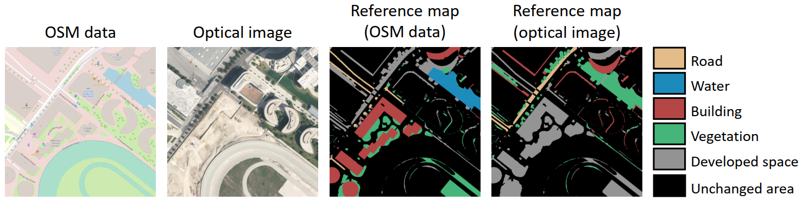
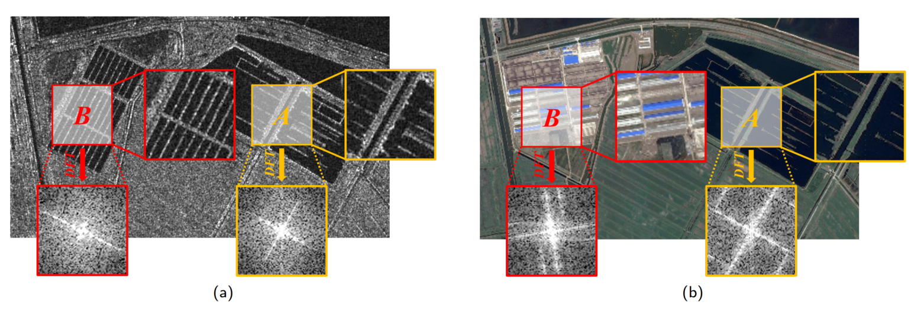
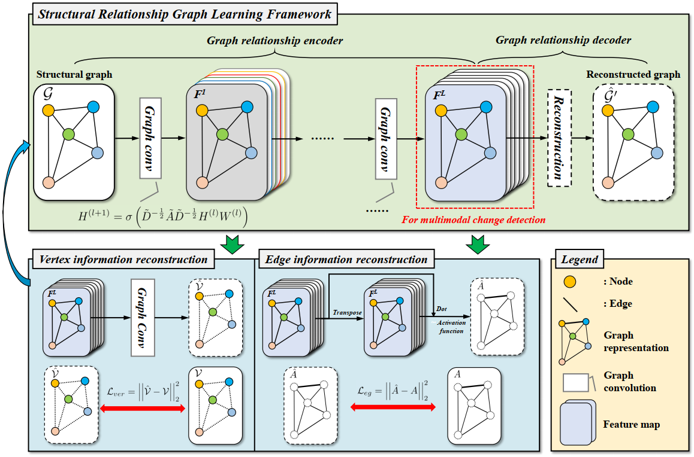
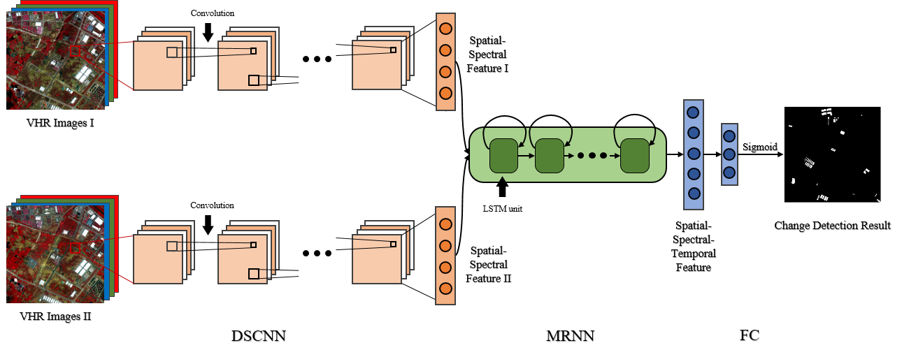
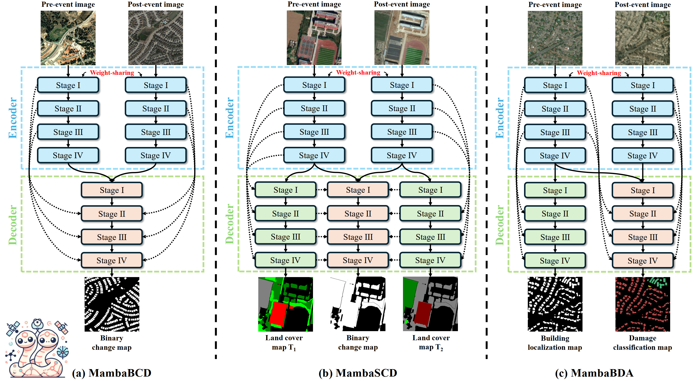
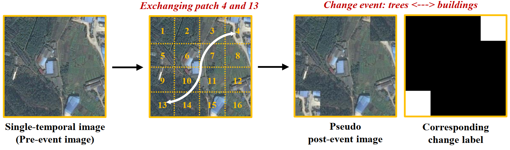
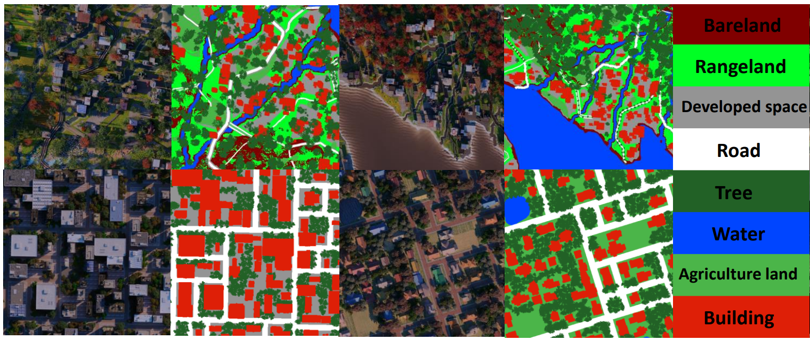
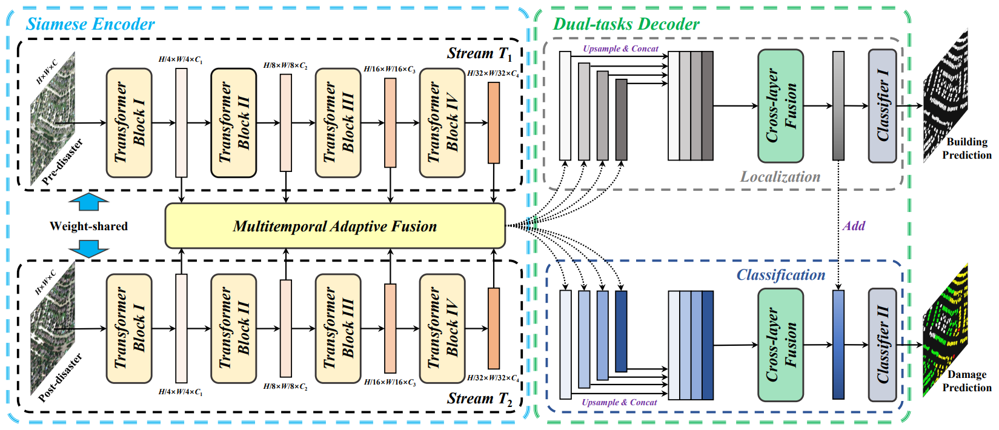
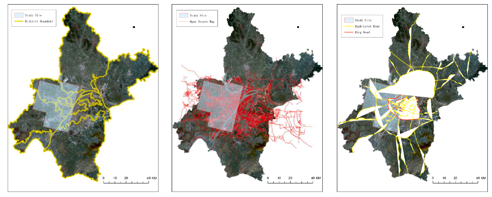

CHEN Hongruixuan |
Short Bio
CHEN Hongruixuan is currently a Ph.D student at Machine Learning and Statistical Data Analysis Lab, The University of Tokyo, advised by Prof. Naoto Yokoya. He was also an academic visitor of Photogrammetry and Remote Sensing Group, ETH Zurich and an intern of The United Nations Satellite Center (UNOSAT). His current research is motivated by how to better monitor, describe and understand changes in our planet's surface by studying machine learning and computer vision approaches, thereby contributing to urban planning, resource management, environmental protection, and sustainable development.
News
- [2025.01] BRIGHT serves the official dataset of IEEE GRSS Data Fusion Contest 2025 (link)!
- [2024.11] ChangeMamba has been selected as ESI Hot Paper!
- [2024.11] Our co-authored paper has been accepted by IEEE GRSL (link)!
- [2024.10] One co-authored paper has been accepted by NeurIPS 2024 Spotlight (link)!
- [2024.09] Acted as Guest Editor Assistant of Remote Sensing (link)!
- [2024.09] ChangeMamba has been selected as ESI Highly Cited Paper!
- [2024.07] Three papers have been selected as ESI Highly Cited Paper!
- [2024.07] ChangeMamba has been selected as IEEE GRSS Weekly Paper (link)!
- [2024.06] One paper has been accepted by IEEE TGRS (link)!
- [2024.06] One co-authored paper has been accepted by IEEE GRSM (link)!
- [2024.05] One paper has been accepted by IEEE TGRS (link)!
- [2024.03] One paper has been awarded as ESI highly cited paper (link)!
- [2024.02] One co-authored paper has been accepted by IEEE TGRS (link)!
- [2023.12] Received AI Center Fusion Research Promotion Fund!
Experience
Work/Overseas Experience:
- 2024.01-2024.07 Academic Visitor, Photogrammetry and Remote Sensing Group, ETH Zurich. Host: Prof. Konrad Schindler
- 2023.05-2024.01 Research Part-time Worker, Geoinformatics Team, RIKEN AIP. Host: Prof. Naoto Yokoya
- 2022.11-2023.03 Research Assistant, Beyond AI, The University of Tokyo
- 2021.05-2022.05 Trainee, The United Nations Satellite Centre, The United Nations Institute for Training and Research
Education Experience:
- 2022.10-2025.09 Ph.D. in Graduate School of Frontier Sciences, The University of Tokyo. Supervisor: Prof. Naoto Yokoya
- 2019.09-2022.06 M.E. in State Key Laboratory of Information Engineering in Surveying, Mapping and Remote Sensing, Wuhan University. Supervisor: Prof. Chen Wu, Prof. Bo Du, Prof. Liangpei Zhang
- 2015.09-2019.06 B.E. in School of Resources and Environmental Engineering, Anhui University. Supervisor: Prof. Yanlan Wu and Prof. Peng Jiang
Selected Publications
Multimodal Change Detection:
 |
BRIGHT: A Globally Distributed Multimodal Building Damage Assessment Dataset with Very-high-resolution for All-weather Disaster Response
H. Chen,J. Song, O. Dietrich, C. Broni-Bediako, W. Xuan, J. Wang, X. Shao, Y. Wei, J. Xia, C. Lan, K. Schindler and N. Yokoya [Paper][Code][Data][Contest] |
|  |
ObjFormer: Learning Land-Cover Changes From Paired OpenStreetMap Data and Optical High-Resolution Imagery via Object-Guided Transformer
H. Chen, C. Lan, J. Song, C Broni-Bedaiko, J. Xia, and N. Yokoya IEEE Transactions on Geoscience and Remote Sensing (TGRS), 2024. [Paper][Code][Data] |
|  |
Fourier Domain Structural Relationship Analysis for Unsuperivsed Multimodal Change Detection
H. Chen, N. Yokoya, and M. Chini ISPRS Journal of Photogrammetry and Remote Sensing, 2023. (ESI Highly Cited Paper) [Paper][Code] |
|  |
Unsupervised Multimodal Change Detection Based on Structural Relationship Graph Representation Learning
H. Chen, N. Yokoya, C. Wu, and B. Du IEEE Transactions on Geoscience and Remote Sensing (TGRS), 2022. [Paper][Code][Data] |
|  |
Change Detection in Multisource VHR Images via Deep Siamese Convolutional Multiple-Layers Recurrent Neural Network
H. Chen, C. Wu, B. Du, L. Zhang, and L. Wang IEEE Transactions on Geoscience and Remote Sensing (TGRS), 2020. (ESI Highly Cited Paper) [Paper][Code][Data] |
Unimodal Change Detection:
|  |
ChangeMamba: Remote Sensing Change Detection with Spatio-Temporal State Space Model
H. Chen, J. Song, C. Han, J. Xia, and N. Yokoya IEEE Transactions on Geoscience and Remote Sensing (TGRS), 2024. (ESI Hot Paper / ESI Highly Cited Paper) [Paper][Code][News] |
|  |
Exchange Means Change: An Unsupervised Single-Temporal Change Detection Framework Based on Intra- and Inter-Image Patch Exchange
H. Chen, J. Song, C. Wu, B. Du, and N. Yokoya ISPRS Journal of Photogrammetry and Remote Sensing, 2023. [Paper][Code][Data] |
 |
Unsupervised Change Detection in Multitemporal VHR Images Based on Deep Kernel PCA Convolutional Mapping Network
C. Wu, H. Chen, B. Du, and L. Zhang IEEE Transactions on Cybernetics (TCYB), 2021. [Paper][Code][Data] |
Multitemporal Image Analysis and Application:
|  |
SyntheWorld: A Large-Scale Synthetic Dataset for Land Cover Mapping and Building Change Detection
J. Song, H. Chen, and N. Yokoya IEEE/CVF Winter Conference on Applications of Computer Vision (WACV), 2024. [Paper][Data] |
|  |
Dual-Tasks Siamese Transformer Framework for Building Damage Assessment
H. Chen, E. Nemni, S. Vallecorsa, X. Li, C. Wu, and L. Bromley Proceeding of the IEEE International Geoscience and Remote Sensing Symposium (IGARSS), 2022. [Paper][Data][News] |
|  |
An Investigation of Traffic Density Changes inside Wuhan during the COVID-19 Epidemic with GF-2 Time-Series Images
C. Wu, Y. Guo, H. Guo, J. Yuan, L. Ru, H. Chen, B. Du, and L. Zhang International Journal of Applied Earth Observation and Geoinformation (JAG), 2021. [Paper] |
Fundings
- 2024.10 - 2025.09, PI, AI Center Fusion Research Promotion Fund (ＡＩセンター融合研究促進費)
- 2024.04 - 2025.09, PI, Grant-in-Aid for JSPS Research Fellows (特別研究員奨励費)
- 2023.12 - 2024.12, PI, AI Center Fusion Research Promotion Fund (ＡＩセンター融合研究促進費)
- 2024.01 - 2024.07, PI, Young Researchers' Exchange Programme Special 2023 Exchange Grant Japan
- 2023.06 - 2024.03, PI, GSFS Challenging New Area Doctoral Research Grant (GSFS Challenge Fund)
- 2023.04 - 2024.03, PI, Microsoft Research Asia Collaborative Research Program Fellowship (MSRA D-CORE 2023)
- 2016.11 - 2018.11, PI, Chinese National Innovative Research Project for Undergraduate Students
Services
Membership:
- IEEE, Student Member
- IEEE Geoscience and Remote Sensing Society (GRSS), Student Member
Journal Reviewer:
- IEEE Transactions on Pattern Analysis and Machine Intelligence (TPAMI)
- IEEE Transactions on Image Processing (TIP)
- IEEE Transactions on Neural Networks and Learning Systems (TNNLS)
- IEEE Transactions on Geoscience and Remote Sensing (TGRS)
- IEEE Journal of Selected Topics in Applied Earth Observations and Remote Sensing (JSTARS)
- IEEE Geoscience and Remote Sensing Letters (LGRS)
- ISPRS Journal of Photogrammetry and Remote Sensing (P & RS)
- Pattern Recognition (PR)
- International Journal of Applied Earth Observation and Geoinformation (JAG)
- Artificial Intelligence Review
- Geo-Spatial Information Science (GSIS)
- Neurocomputing
- International Journal of Digital Earth
- ....
Conference Reviewer:
- IEEE/CVF Conference on Computer Vision and Pattern Recognition Workshops (CVPRW)
Resources
Codes:
- Change Detection Repo (Code)
- ChangeMamba (Code)
- ObjFormer (Code)
- I3PE (Code)
- FDMCD (Code)
- SR-GCAE (Code)
- SiamCRNN (Code)
- KPCA-MNet (Code)
- DSMSCN (Code)
Datasets:
- BRIGHT dataset (Dataset)
- OpenMapCD dataset (Dataset)
- SynRS3D dataset (Dataset)
- CoralReef dataset (Dataset)
- Wuhan dataset (Dataset)
- SyntheWorld dataset (Dataset)
- GF-2 change detection dataset (Dataset)
- Wuhan Multi-Application VHR Scene classification dataset (WH-MAVS) (Dataset)
Awards
- 2023, Japan Society for the Promotion of Science (JSPS, 日本学術振興会) DC2 Research Fellowship
- 2023, Young Researchers' Exchange Programme Special 2023 Exchange Grant
- 2023, GSFS Challenging New Area Doctoral Research Grant (GSFS Challenge Fund)
- 2023, MSRA Collaborative Research Program Fellowship (D-CORE 2023)
- 2022, The University of Tokyo Fellowship (Todai Fellowship) | 东京大学奖学金
- 2022, Outstanding Graduate Student, Wuhan University | 武汉大学优秀毕业研究生
- 2021, Wang Zhizhuo Innovation Talent Scholarship, Wuhan University | 王之卓创新人才奖学金
- 2021, National Scholarship for Postgraduates, Ministry of Education | 硕士研究生国家奖学金
- 2021, First Prize of Academic Scholarship, Wuhan University | 武汉大学学业奖学金一等奖
- 2021, Outstanding Graduate Student, Wuhan University | 武汉大学优秀研究生
- 2020, National Scholarship for Postgraduates, Ministry of Education | 硕士研究生国家奖学金
- 2020, First Prize of Academic Scholarship, Wuhan University | 武汉大学学业奖学金一等奖
- 2020, Outstanding Graduate Student, Wuhan University | 武汉大学优秀研究生
- 2019, LIESMARS Scholarship for Excellent First-Year Postgraduates, LIESMARS | LIESMARS优秀硕士新生奖学金
- 2019, Excellent Graduate of Anhui Province, Anhui Province Department of Education | 安徽省品学兼优毕业生
- 2018, First Prizes of Academic Scholarship of Anhui University, Anhui University | 安徽大学一等学术奖学金
- 2018, Second Prize of Esri Cup GIS Software Development Contest in China, Chinese Society for Geodesy | Esri杯GIS软件开发大赛二等奖
- 2018, Outstanding Prize of National Geomatics Contest in Programming, The State Bureau of Surveying and Mapping | 全国大学生测绘技能大赛编程特等奖
- 2018, Meritorious Winner of the US Mathematical Contest in Modeling, Consortium For Mathematics & Its Applications | 美国大学生数学建模竞赛一等奖
- 2017, Second Prize of China National Mathematical Contest in Modeling, Society for Industrial and Applied Mathematics | 全国大学生数学建模竞赛二等奖
- 2017, National Scholarship for Undergraduates, Ministry of Education | 本科生国家奖学金
- 2016, Anhui University Scholarship for Excellent Students, Anhui University | 安徽大学优秀学生奖学金